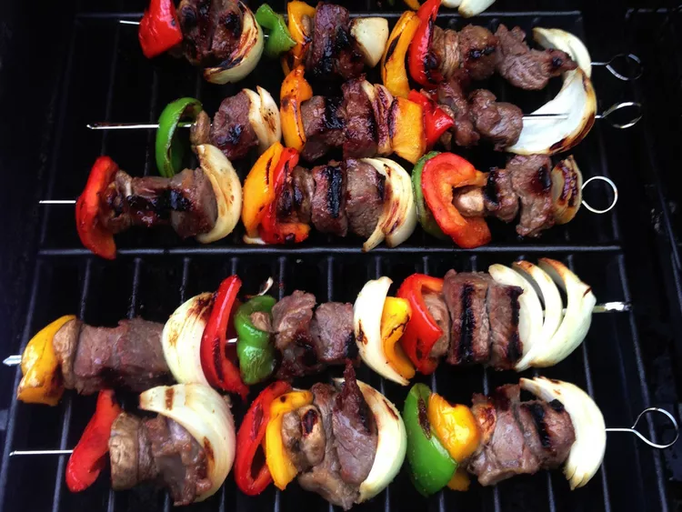

Kabobs

Description
These grilled kabobs made with steak and chicken stay moist and flavorful. The meat and vegetables are marinated in a honey teriyaki sauce, then skewered and grilled until tender and delicious.
Info
- Prep Time: 30 mins
- Cook Time: 10 mins
- Additional Time: 4 hours
- Cook Time: 4 hours 30 mins
- Servings: 10
Ingredients
- ½ cup teriyaki sauce
- ½ cup honey
- ½ teaspoon garlic powder
- ½ pinch ground ginger
- 1 ½ pounds skinless, boneless chicken breast halves - cut into cubes
- 1 pound beef sirloin, cut into 1 inch cubes
- 2 red bell peppers, cut into 2 inch pieces
- 1 large sweet onion, peeled and cut into wedges
- 1 ½ cups whole fresh mushrooms
- skewers
Directions
- Mix teriyaki sauce, honey, garlic powder, and ginger in a large resealable plastic bag. Place chicken, beef, red bell peppers, onion wedges, and mushrooms in the bag, coat with the marinade, squeeze out excess air, and seal the bag. Refrigerate for 4 hours to overnight.
- Preheat the grill to medium-high heat. Lightly oil the grill grate.
- Discard marinade. Thread meat and vegetables onto skewers, leaving a small space between each item.
- Grill skewers, turning as needed, until meat is cooked through and vegetables are tender, about 10 minutes..
Nutritional Facts
- Calories: 304
- Fat: 13g
- Carbs: 21g
- Protein: 25g
Additional Links